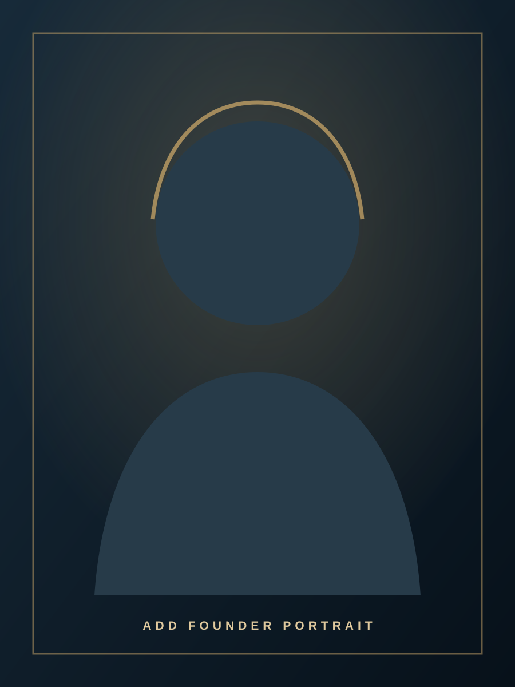

Local relationships
Ongoing connections in Istanbul provide context that cannot be gained from brochures alone.
Our story · Singapore to Istanbul
Expirius began with three months spent inside Istanbul's hair-transplant landscape—meeting clinic owners, observing patient journeys and learning what considered care should look like.

A personal introduction to Istanbul
In 2020, Wan moved to Istanbul. There, he met Derya—an experienced professional in the city's hair-transplant industry and the owner of her own clinic.
That introduction opened the door to a closer understanding of an industry that is often difficult to assess from overseas. Over the following three months, Wan visited numerous clinics and spoke directly with clinic directors, owners and medical teams.
He compared more than attractive marketing. He paid attention to doctor involvement, donor-area planning, hygiene, technology, patient communication, aftercare and the clarity of what clients were actually paying for.
“The goal was never to offer the greatest number of clinics. It was to understand which relationships were worth keeping.”
A relationship-led journey
Expirius grew from first-hand experience, continued clinic relationships and the belief that travelling for treatment should feel clear and coordinated.
Wan experiences the city as a resident and meets Derya, establishing his first close connection to the local industry.
Visits, conversations and comparisons help identify clinics that stand out for clinical discipline, communication and value.
Wan creates Expirius Hair Transplant to bring carefully coordinated Istanbul packages to clients from Singapore and the region.
Clinic relationships, techniques, technology and aftercare practices are reviewed as the industry continues to develop.
The Expirius approach
Our role is to make the journey easier to understand and organise while keeping medical decisions where they belong—with the treating doctor and patient.
Ongoing connections in Istanbul provide context that cannot be gained from brochures alone.
Suitability, graft planning, technique and treatment remain the responsibility of qualified clinicians.
Flights, accommodation, transfers, inclusions and aftercare are brought together in a written package.
Technology matters, but so do clinical practice, communication and responsible expectations.
An informed perspective
Through conversations with doctors, Wan learned that there is no single treatment that is right for every type of hair loss. Medicines and non-surgical therapies may help some people, but they can require continued use, may have side effects and do not restore lost follicles for every patient.
For a suitable adult with an appropriate hair-loss pattern and sufficient donor hair, transplantation may offer a more durable and predictable option. It is still a medical procedure: outcomes vary, risks exist and no ethical provider should guarantee a result.
Your treatment options should be discussed with a qualified doctor. Expirius coordinates consultations and travel arrangements; it does not replace independent medical advice.
A direct conversation
Share where you are travelling from, your preferred package and any initial questions. Wan will explain the coordination process and arrange the next step for a confidential clinical suitability consultation.